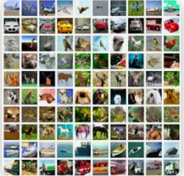
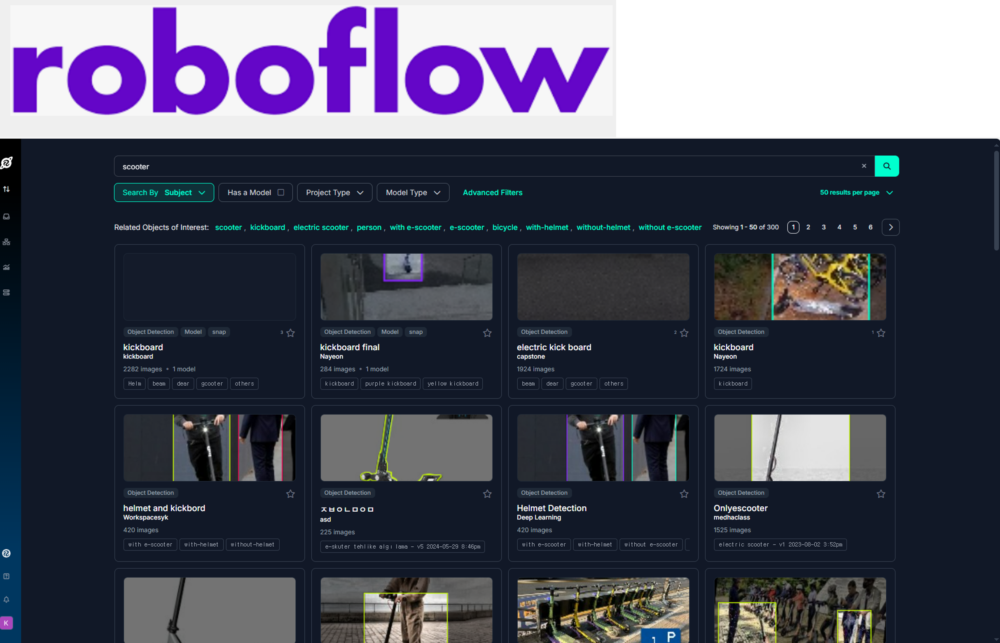
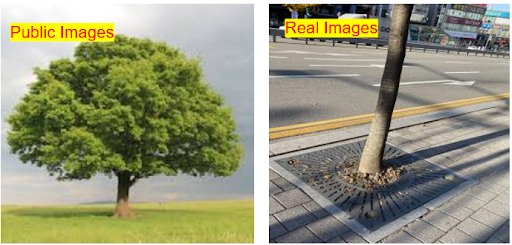
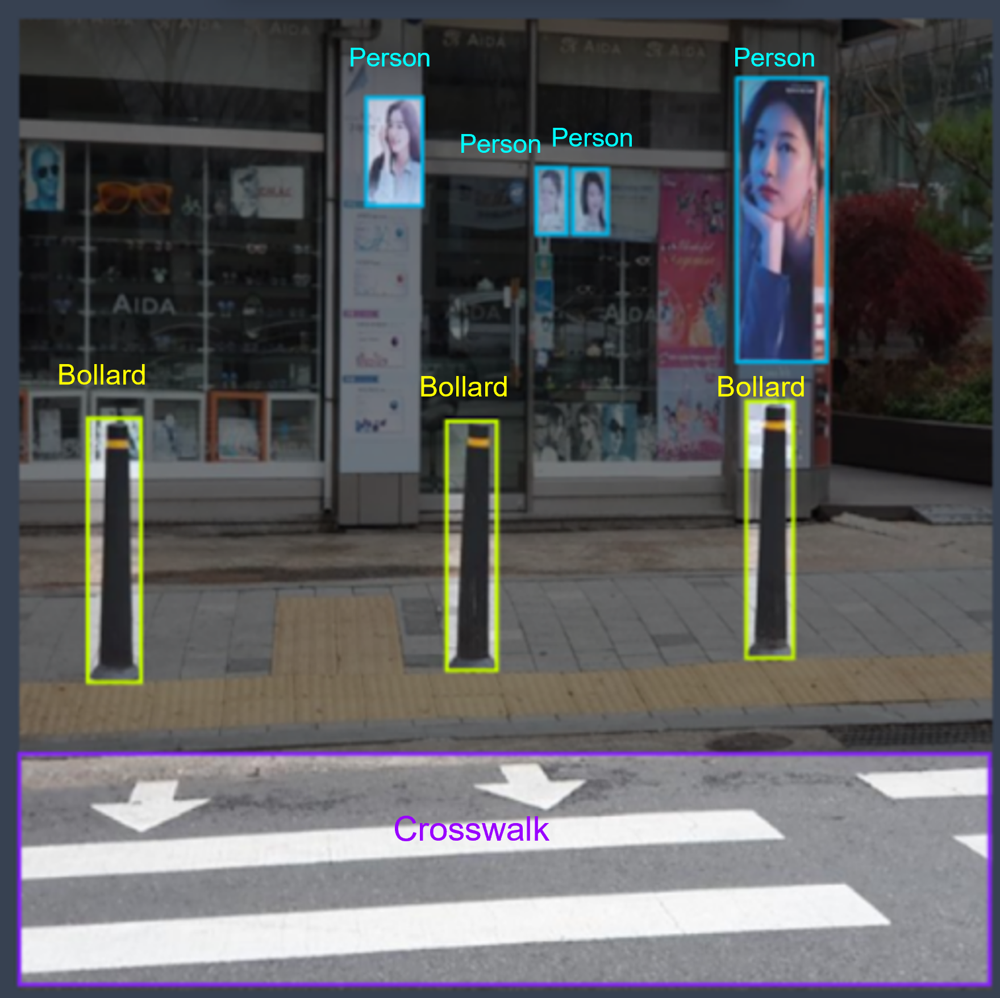

Data & Preprocessing
Dataset Overview
- Volume: ~15GB total, over 90,000 labeled images
- Sources: COCO dataset, Public Images from Robowflow, Kaggle
- Labeling Tools: Roboflow Annotation Tool + Manual QA

COCO dataset

Roboflow dataset
Object Classes
Common Classes (14)
- Person
- Bicycle
- Car
- Motorcycle
- Bus
- Truck
- Traffic Light
- Fire Hydrant
- Stop Sign
- Parking Meter
- Bench
- Bird
- Cat
- Dog
Additional Classes (13)
- Pothole
- Scooter
- Tree
- Trash Bin
- Bollard
- Fence/Barrier
- Traffic Cone
- Bad Roads
- Crosswalk
- Pole
- Stairs
- Upstairs
- Upstairs
Challenges & Solutions
Challenges
- Mislabeling and noise in public datasets
- Minority classes like potholes hard to source
- Discrepancies between real-world and training data
Solutions
- Manual relabeling and quality control
- Data augmentation and undersampling strategies
- Custom datasets captured with GoPro / phone cameras

Example: real-world capture vs. public dataset image quality

Example of mislabeling error from auto-label tool
Preprocessing Workflow
- Data augmentation for minority classes (rotation, flipping, brightness)
- Undersampling of dominant classes (e.g., person)
- Manual quality checks and relabeling
- Dataset split: 80% train / 10% validation / 10% test
Augmentation applied to minority-class images to enhance balance
Replay-Based Learning 🧠
To prevent catastrophic forgetting when adding new classes, we used replay-based learning. This technique preserves prior model performance while enabling continual learning from new examples.